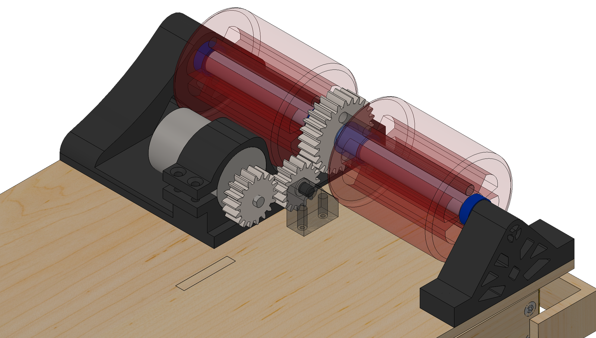
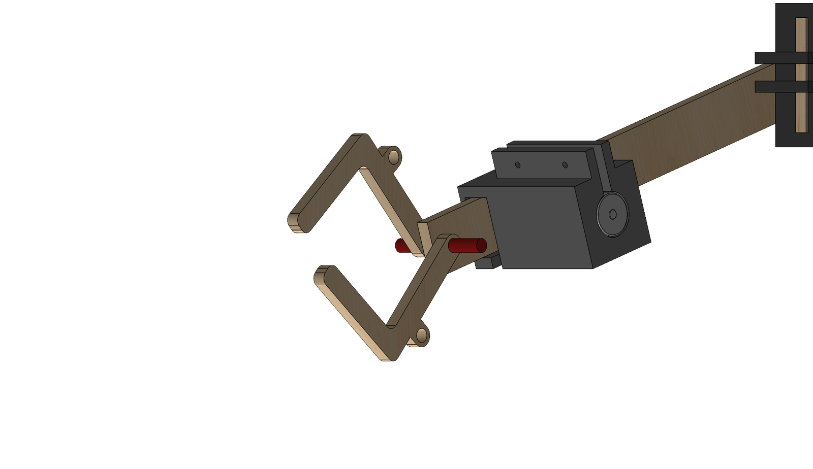
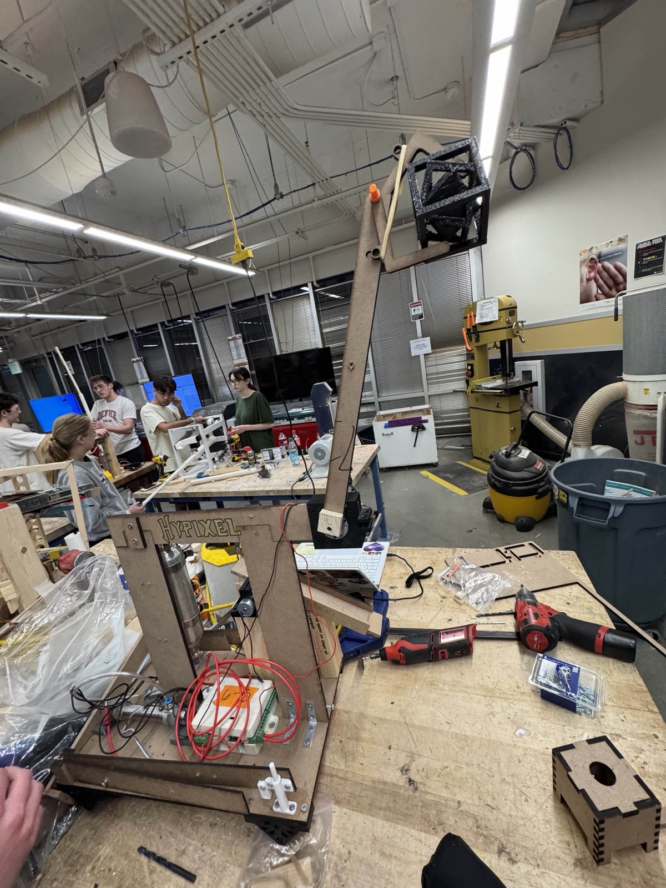

The story
ME 2110 is Georgia Tech's design-build-compete course: one semester to take an autonomous machine from nothing to a competition floor, with graded sprints along the way that force you to show working hardware long before you feel ready. There is no time to perfect anything, so the only way to do well is to move fast and stay scrappy. Build the simplest thing that could plausibly work, put it in front of the task, learn what breaks, and iterate. That mindset is the whole story of this project.
The competition was Minecraft-themed, so the tasks were video-game actions translated into hardware. In a single 40-second autonomous run, each robot had to clear hostile "mobs" (the game's enemy creatures, here represented by blocks) out of its home zone, feed a bone to "tame a wolf" at the center of the arena, mine ore blocks, and dislodge an "End Crystal" and place it atop an obsidian tower. Every task was worth points, and the highest-value ones (the wolf and the crystal) were also the hardest to pull off reliably. All of it had to fit a 12 by 24 by 18 inch envelope, cost under $120, and run on nothing more than a provided mechatronics kit, gravity, five mousetraps, and five rubber bands.
Our four-person team built a robot we called Hypixel. I led the mob-knocker arm and the End Crystal lift, owning both from concept through CAD, fabrication, and testing, and I also handled a good share of the documentation (the alternative-designs study, the house of quality, the runtime flowchart) and delivered our studio design review.

Structure first, so we could move fast later
We resisted the urge to start gluing parts. We translated the competition into customer needs and engineering requirements, built a function tree, and generated a wide spread of concepts for every task: spring hammers, slingshots, and motor arms for the mobs, gravity slides and pneumatic pistons for delivery, and IR, ultrasonic, or camera options for sensing. Then we scored four full-robot concepts in weighted decision matrices and let the numbers choose, which landed us on a mobile, drivetrain-based design. The structure up front gave the fast iteration later a direction to run in.

Scrappy by design
The whole robot came in at $46.60, roughly 61% under the cap, built from laser-cut MDF, 3D-printed PLA and TPU, a length of lumber, hinges, and rubber bands. A single motor drove the rear wheels through a 3:5 gear ratio, trading speed for the torque needed to haul the subsystems around. My mob-knocker arms rode on 3D-printed pivots, held back in tension by rubber bands against a piston-pinned stopper. When the piston fired, the stopper shot clear and the arms snapped out and unfolded at a hinge with enough force to eject the mobs. My End Crystal lift was a motor-driven arm carrying a solenoid-pin claw that clamped the crystal and raised it about thirty inches, just above the tower. Every choice favored the simplest mechanism that did the job, which is exactly what a tight budget and a ticking clock reward.


Test, fail, iterate
We split testing into subsystem tests off the track and full-system runs on it, where most of the trouble lived in the timing of the autonomous code. The competition made the payoff of iterating impossible to miss. In the first sprint we scored a single point and finished last in our group of six. Building a drivetrain that actually worked had eaten most of our time, and since every subsystem rode on that mobile base, nothing else could function until it did. We tore into the problems, and one fix was almost comically simple: the robot kept getting hung up on a bump in the track, so we increased the wheel radius. We standardized our starting position for repeatability, and by the second sprint we had climbed to fourth, averaging over six points.
Outcome
By the final competition we reached the top 16 of 56 teams and placed 11th of 56 in the design review. Our rounds ran 14, 9, 27, and 30 points, and in the fifth the wolf bone jammed and we were eliminated, finishing with an 18.2-point average. The subsystem I owned outright, the mob-knocker arm, scored in every single round of the competition. The End Crystal lift was the honest counterpoint: it reliably dislodged the crystal for its points but never nailed the full placement on the tower, a casualty of running out of time to develop it. That tradeoff is the lesson of the whole class in miniature. You cannot perfect everything in a semester, so you make the most important things reliable and you ship.
